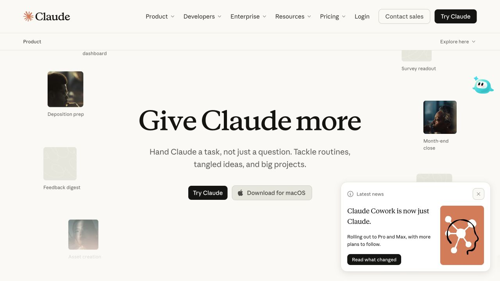
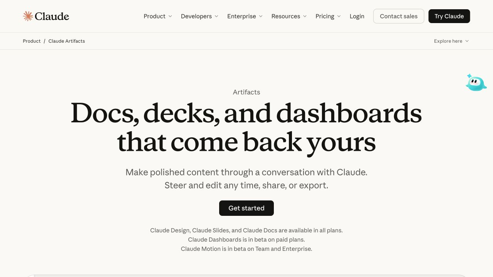
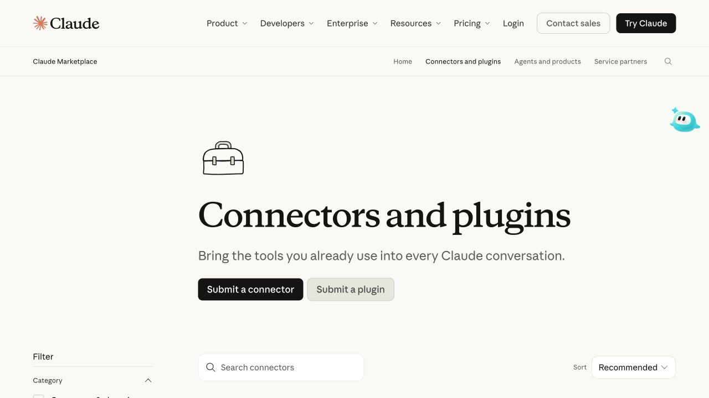
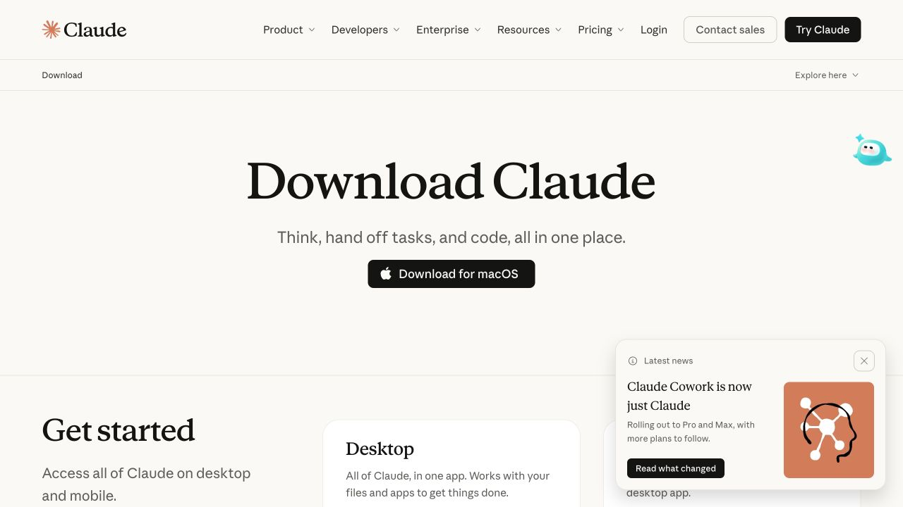
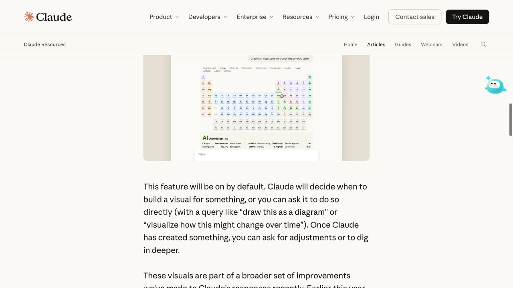
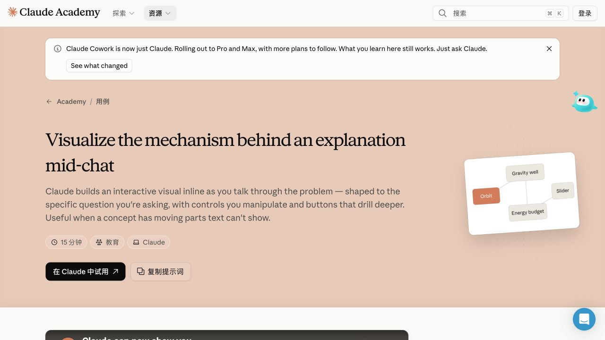
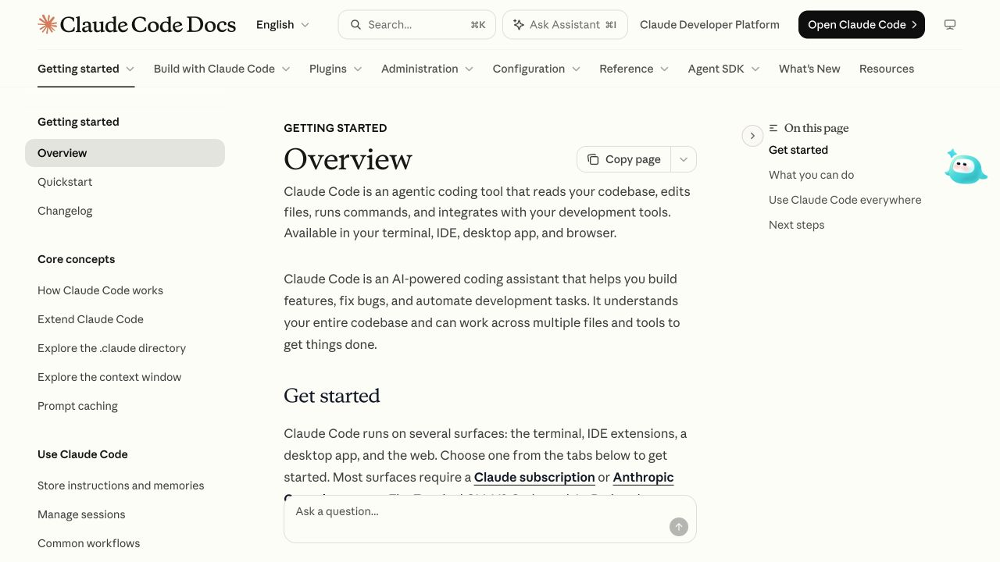

出版与阅读
文章标题与元信息正文 / 视频 / 图解段落目录
单列阅读与边栏注释；动态图解插在需要解释的段落。
从出版页面，到教学、目录、开发者文档与动态解释。
共同规则维持风格，任务决定布局。
14 个官方来源 · 7 类场景 · 7 张公开页面实见截图
截图含浏览器扩展浮层，不属于原站设计。应用内部依据官方文档；当前账户入口无法进入。
单列阅读与边栏注释；动态图解插在需要解释的段落。
左侧控制范围，右侧查看结果；批量选择与结果计数跟随任务。
给内容最大的面积；操作靠近对象。此布局是文档推导，待实际应用核查。
导语可以用色块，步骤可定位，提示块可独立复制。
原创组件样例 / 非官方素材。默认静态，点击播放；支持暂停、重播、离开标签页暂停。长度可配置。
AS11 实见：视频 + GIF + PNG。GIF 原尺寸 1920 × 1080；当前视口正文媒体约 565 × 318 px。小窗口能保留上下文。
可复用建议：一段动作、一条解释；图注贴近素材。视频保留控制条，小循环提供静态替代；这些播放策略是我们的设计规则，并非已证实的原站统一规范。
看原文中的视频和 GIF ↗14 个来源 / sources
栏目、日期、分类和文章列表共同建立出版秩序。
PublicationList · SectionIndex
官方原页 / Source ↗技术内容按主题和文章组织；适合内容入口而非数据卡片堆叠。
ArticleIndex · FeaturedStory
官方原页 / Source ↗

小标签与大衬线标题分工；示例切换和作品信息可独立组合。
ExampleSwitcher · ArtifactMeta
官方原页 / Source ↗
左侧分类筛选，右侧检索、排序和目录；勾选分类后范围与数量同步变化。
FilterRail · DirectoryGrid
官方原页 / Source ↗
围绕任务和工作成果组织说明；应用内执行过程仍需独立检查。
TaskBrief · ProgressRail
官方原页 / Source ↗官方说明作品窗口、工具栏、缩略图和属性区域。分区布局由此推导，不声称像素复刻。
ArtifactCanvas · Inspector · ThumbnailRail
官方原页 / Source ↗项目、知识文件、指令和成员有不同职责，适合分别建立导航和编辑区域。
KnowledgePanel · MemberList · ProjectMenu
官方原页 / Source ↗
同文组合YouTube视频、GIF操作演示和静态PNG；局部演示留在正文流内。
ArticleVideo · LoopFigure · MediaCaption
官方原页 / Source ↗段落先说明用途，再配视频与操作截图；动效承载具体解释任务。
ExplainerFigure · Walkthrough
官方原页 / Source ↗
色块导语、时间与主题标签、分步教程、可复制提示和右侧目录，形成教学节奏。
LessonIntro · PromptBlock · StepIndex
官方原页 / Source ↗
左侧分组导航、中间正文、右侧页内目录；安装方式用嵌套标签页，代码有局部工具。
DocsShell · CodeBlock · PlatformTabs
官方原页 / Source ↗字体按角色选。展陈标题、阅读正文、操作标签、数字各自定义。Artifacts 页的小 h1 是无衬线标签，大视觉标题却是 p；不能依赖 HTML 标签推断样式。
留白按任务选。产品页让标题呼吸；目录页增加扫描密度；开发者文档分三栏。统一基础间距，容器宽度分别配置。
颜色按内容选。保持文字对比与层级；教学导语可以更有颜色，数据与画布可有独立强调色。
素材也是组件。统一比例、图注、静态预览和播放状态。原站视频与品牌图不作为我们的产品资源打包。
待探索：真实应用内部、移动端、客户故事、编辑器具体操作和更多动效时序。截图与结构核查不等于这些场景已经实现。
研究记录与队列 ↗